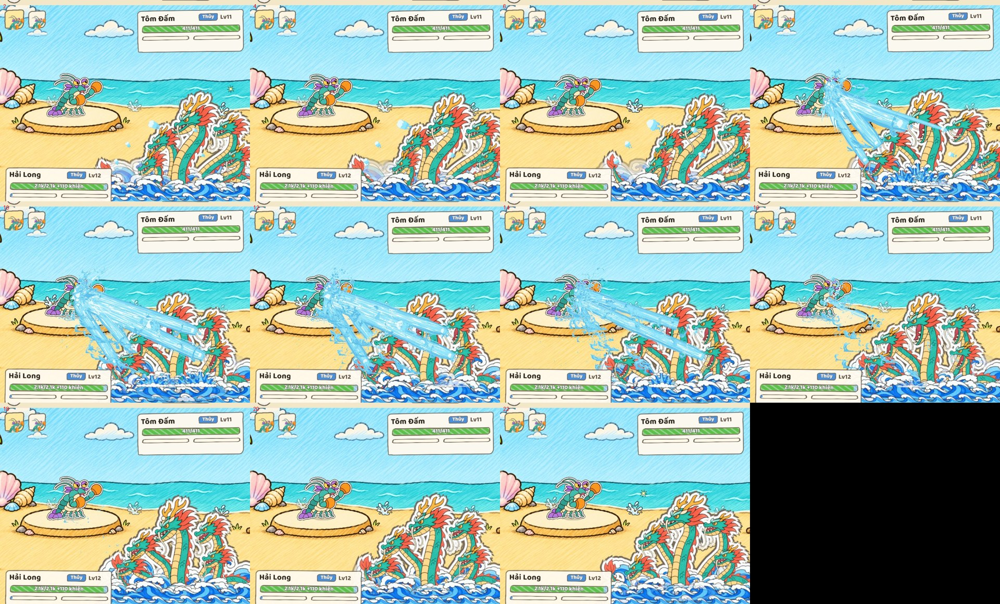
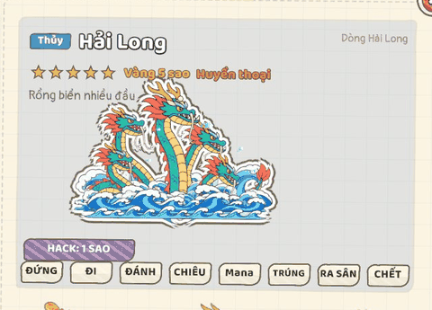

Chiêu mana Hải Long: Loạt thủy tia (thay loạt cầu nước)
Mỗi đầu rồng bắn một tia Water Laser đúng lúc đầu đó vươn ra: dạng 3 năm tia, dạng 2 ba tia, dạng 1 một đầu bắn ba tia toả. Tia đầu chính dày nhất; các tia hội tụ vào thân đối thủ ở những điểm lệch nhau, bắn và tắt so le. Ảnh chụp trong Unity.

